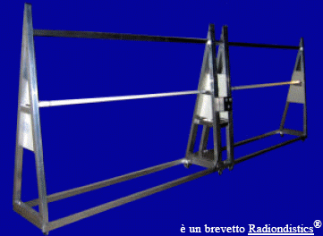
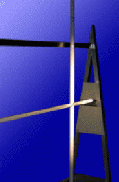
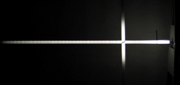
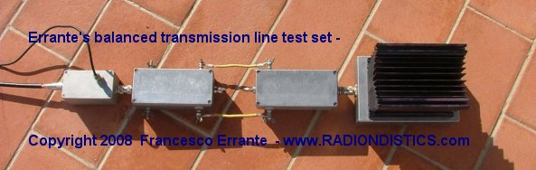
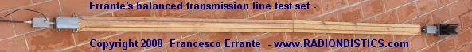

|
Planning a trip to Sicily? �Then, make sure you won't be feeding the Mafia!  |
| Home | Prodotti Scientifici | Prodotti per le Radiocomunicazioni | Contattaci |
|
Se hai un interesse scientifico in materia di fisica della
radio, visiona questo sito internet nell'ordine consigliato! |
Apparato di Errante
|
 |
Premessa
Sebbene sia trascorso oltre un secolo dal giorno in cui Heinrich Hertz realizzo' la
prima trasmissione radio artificiale, la comprensione dei fenomeni radio-elettrici
(pi� comunemente intesi come fenomeni elettromagnetici) e' stata limitata alla sola
teoria. Cio' perche' l'analisi dei fenomeni radio-elettrici aveva, finora, fatto
affidamento esclusivamente sullo strumento matematico. Quest'ultimo pero', pur
essendo di grande ausilio alla fisica, non puo' sostituirsi all'osservazione
strumentale dei fenomeni naturali. L'osservazione strumentale e' essenzialmente
legata al progresso tecnologico ma necessita soprattutto dell'inventiva del
ricercatore scevro da preconcetti.
L'apparato qui presentato consente di riprodurre passo passo, i principali
esperimenti, ideati e realizzati dall'autore per
compiere indagini sulla fisica dei segnali e dei trasduttori radio-elettrici
(antenne radio), nonch� per le indagini sulla radiazione hertziana (le radio-onde). mediante i
quali lo stesso ha scoperto l'effettivo meccanismo della radiazione hertziana
(trasduzione radio-elettrica). Tutti i dispositivi radio-elettrici essenziali
utilizzati in questo apparato sono coperti da brevetto industriale.
Questo apparato consente di effettuare numerosi esperimenti e misure e permette di
comprendere il meccanismo che origina la radiazione hertziana su un conduttore e la
sua propagazione nello spazio, mediante l'uso contemporaneo di tubi rivelatori e
strumenti elettrici, mettendo l'allievo in condizione di vedere ad occhio nudo la
distribuzione energetica della radiazione hertziana su entrambi i rami di un
antenna a dipolo e nelle sue immediate vicinanze, nonche 'di poter variare e
misurare la potenza del segnale iniettato alla'ntenna e misurare i rapporti
stazionari durante la fase di trasduzione radio-elettrica allo scopo di poter
univocamente correlare cause ad effetti. (Proporzionalit� tra potenza del segnale
radio-elettrico ed intensit� del campo generato; attenuazione introdotta dallo
spazio etc...)
 |
 |
 |
-
Ia esperienza di laboratorio:
Verifica sperimentale della sopprimibilita' di uno qualsiasi dei due rami del dipolo aperto.
Descrizione:questo esperimento permette di dimostrare che una qualsiasi antenna a dipolo non e' un'antenna elementare, bensi' essa e' una cortina elementare formata da due antenne indipendenti (i due rami del dipolo stesso). Esso si basa sul ns. circuito radio-elettrico per la soppressione di uno qualsiasi dei rami di un dipolo aperto a 1/2 onda (vedasi ns. soppressore) e permette l'estromissione alternata dal meccanismo di trasduzione radioelettrica, di entrambi i rami del dipolo e contemporaneamente permette di effettuare sia la misura del rapporto onde stazionarie (ROS) agli ingressi di entrambi i rami del dipolo che all'ingresso del sistema di simmetrizzazione (vedasi ns. balun rosmetrico con terra virtuale).
-
IIa esperienza di laboratorio:
Verifica sperimentale sperimentale dello sdoppiamento elettrico del dipolo ripiegato.
Descrizione:questo esperimento permette di dimostrare che una qualsiasi antenna a dipolo ripiegato non e' un'antenna elementare, bensi' essa e' una cortina elementare formata da due antenne indipendenti ma coincidenti. Esso si basa sul ns. balun con terra virtuale per la sdoppiamento del filamento rami di un dipolo aperto a 1/2 onda (vedasi ns. sdoppiatore) e permette l'estromissione alternata dal meccanismo di trasduzione radioelettrica, di entrambi i rami sdoppiati del dipolo ripegato e contemporaneamente permette di effettuare sia la misura del rapporto onde stazionarie (ROS) agli ingressi di entrambi i rami del dipolo che all'ingresso del sistema di simmetrizzazione (vedasi ns. balun rosmetrico con terra virtuale).
-
IIIa esperienza di laboratorio:
Verifica sperimentale del potere ionizzante della radiazione hertziana.
Descrizione:Questo esperimento consente di verificare il potere ionizzante della radiazione hertziana (radio-onde) tramite l'impiego di un rivelatore passivo di radiazione hertziana a fluorescenza da ionizzazione secondaria (Vedasi ns. rivelatore).
-
IVa esperienza di laboratorio:
Verifica sperimentale del meccanismo della radiazione hertziana.
Ia e IIa legge di Errante
Descrizione:Questo esperimento consente di verificare come un qualsiasi segnale elettrico a radiofrequenza od un qualsiasi impulso elettrico a radiofrequenza, iniettato su un qualsiasi conduttore elettrico di qualsiasi forma, dia sempre origine a radiazione hertziana con inizio sul lato opposto a quello da dove viene iniettato. Parimenti, consente di verificare come un qualsiasi segnale elettrico a radiofrequenza od un qualsiasi impulso elettrico a radiofrequenza, iniettato su un qualsiasi conduttore elettrico di qualsiasi forma, debitamente terminato su un carico anti-induttivo di impedenza pari a quella della sua fonte, non dia mai origine a radiazione hertziana. (Vedasi La radiazione hertziana - osservazione radioscopica di Francesco Errante )
-
Va esperienza di laboratorio:
Verifica sperimentale della direttivit� del dipolo. (Guadagno e reiezione)
Descrizione:Questo esperimento consente di verificare come la f.e.m. indotta su un dipolo varii al variare del suo orientamento rispetto ad una fonte remota di radiazione hertziana.
-
VIa esperienza di laboratorio:
Accoppiamento di due dipoli paralleli nello spazio. (Radiazione hertziana ed induzione di f.e.m.)
Descrizione:Questo esperimento consente di verificare, macroscopicamente, il trasferimento di energia nello spazio mediante radiazione hertziana.
 E', adesso,
commercialmente disponibile il ns. apparato per la fisica delle linee di trasmissione
bilanciate per segnali elettrici a radio frequenza. Leggi !
E', adesso,
commercialmente disponibile il ns. apparato per la fisica delle linee di trasmissione
bilanciate per segnali elettrici a radio frequenza. Leggi !
 |
 |
 |
|
RADIONDISTICS e' un
OEM (Original Equipment Manufacturer) e produce dispositivi e sistemi
radio-elettrici e radio-elettronici interamente basati sulla propria tecnologia
brevettata. Oltre ai prodotti standard qui mostrati, Radiondistics puo'
progettare, produrre e fornire articoli, materiali, attrezzature e sistemi di
misura completi per qualsiasi esigenza del Cliente. Per conoscere i distributori
dei ns. prodotti scientifici per la didattica, fai click qui. |
|
RADIONDISTICS garantisce a vita i propri prodotti. |

|
Tutti i concetti, metodi, disegni e dispositivi presentati in
questo sito internet
|

|
All rights reserved. Copyright � 1985-
Francesco Errante |